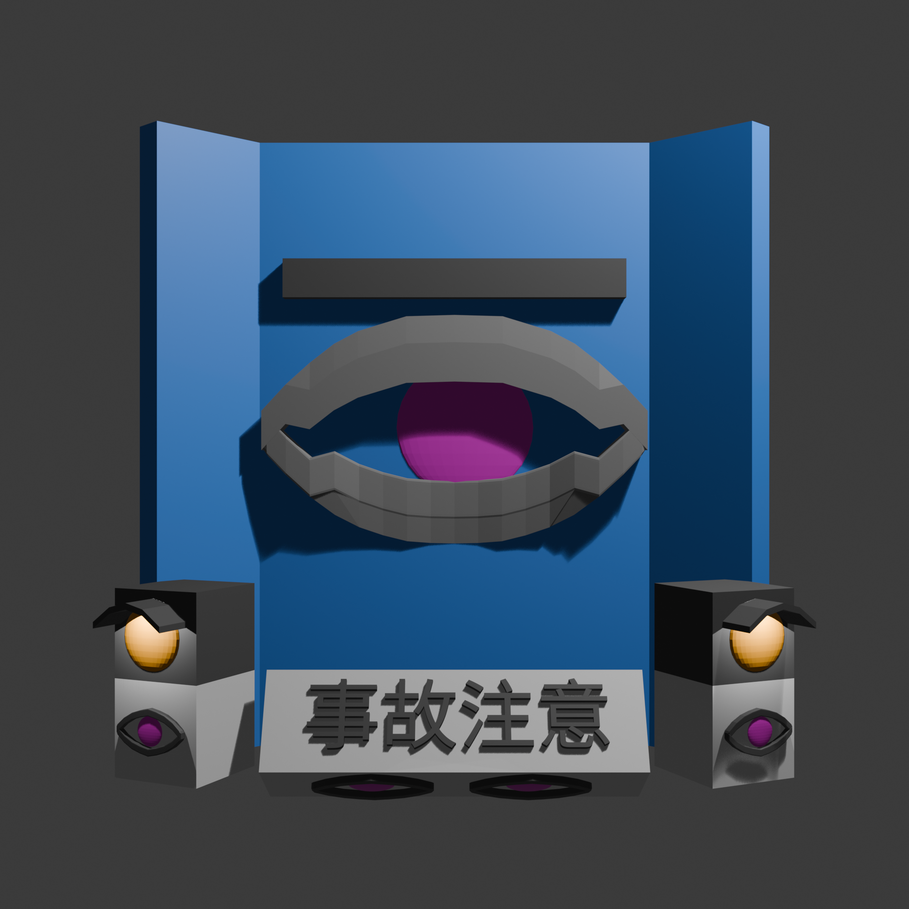
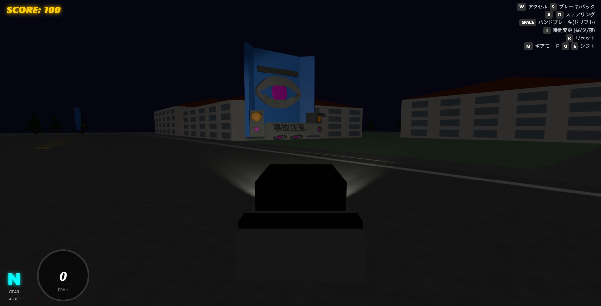

車外から受ける同乗者効果による事故防止システム
交通事故は多くの国でGDPの3%ほどの損失を出す、人類が直面する最も身近で最も大きな社会問題です。
私たちは「視線」の力で、この問題に挑みます。
勉強支援サービス「milu」の検証において、目を中心にした製品を使用すると、人が他者の存在を感じて作業効率が上がる「観客効果」や親近感が働き、集中力が向上することが確認されました。
この心理的アプローチを交通安全に応用。町中に一定サイズの「目」を配置することで、運転者に疑似的な同乗者を与えます。誰かに見られているという適度な緊張感が覚醒水準を維持し、速度の安定化、ひいては事故の防止に繋がります。
景観を破壊せず、かつ運転者の注意を引くため、弱すぎず目を刺激しすぎないマットなグリーンとグレーの配色を採用しています。
平面ではなく、曲線と球体を用いた3D構造にすることで、左右どちらの角度からでも「見られている」という立体感を強調し、同乗者効果を最大化します。
作品展示としての迫力を持たせつつ、ミニチュアを周囲に複数配置するなど、実際の都市空間でのスケール感を考慮した設計を行っています。
実際に町中にMILUが存在した場合の景色の変化や、運転への心理的効果を検証するため、専用のドライブシミュレータ環境を構築しました。

ドラッグで回転、スクロールでズームアウトが可能です。